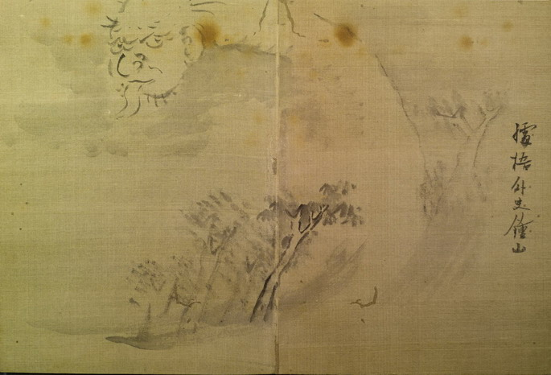

見越し入道か轆轤首と思われる。頭は入道のもので、口から長い舌を出している。太くながい首は、下に描かれた林を越えて、伸びている。体は描かれていない。
著作者：據梧外史鍾山／出典：親書誌：U426_nichibunken_0155：東都画家妖怪画帖；トウトガカヨウカイガチョウ／日付：2010／資源識別子：U426_nichibunken_0155_0004_0000
Copyright (c)2010- International Research Center for Japanese Studies, Kyoto, Japan. All rights reserved.